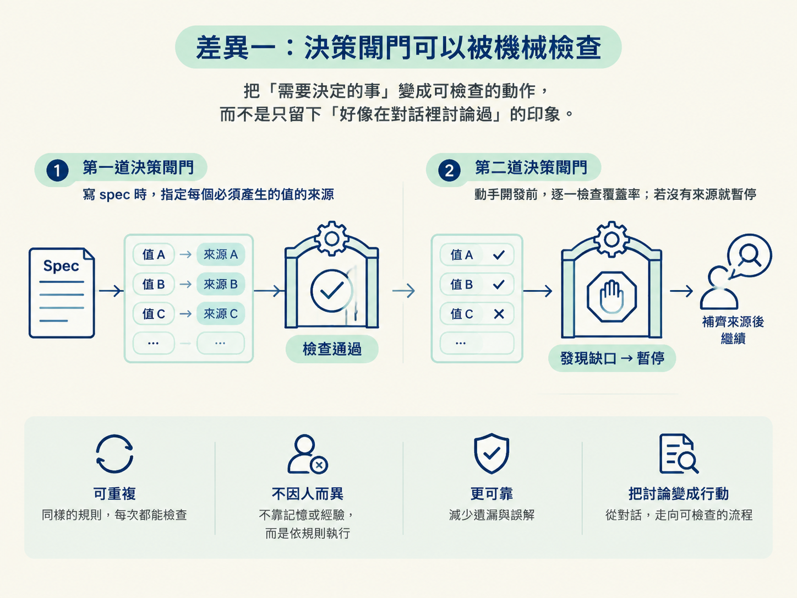
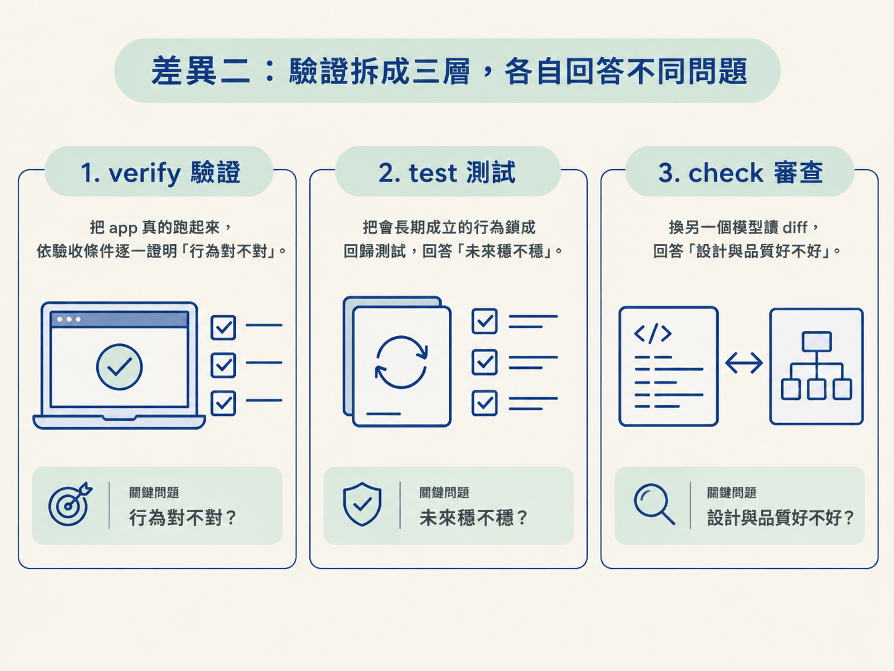
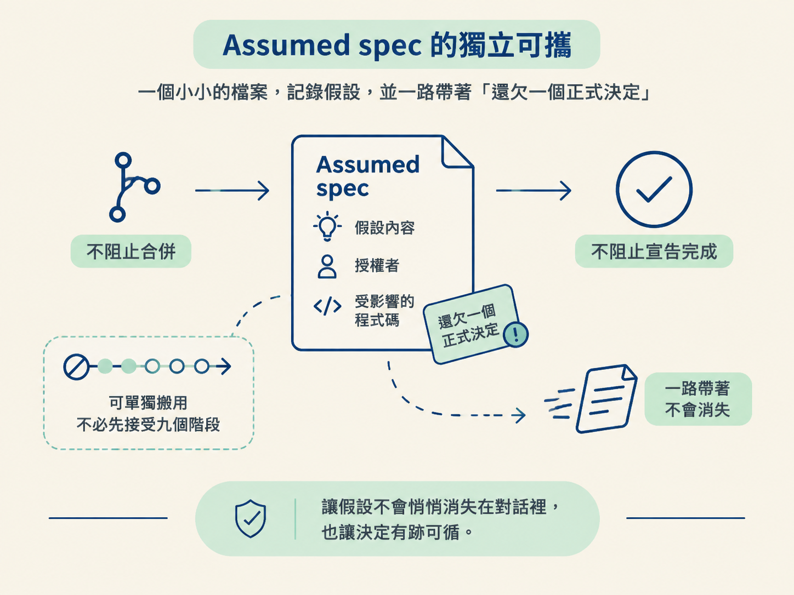

你可能已經有一套跑得動的 SDD 流程，大致沿著 grill、spec、issues、implement、review 這條路走。那麼，為什麼還要學 jsm-skills？它究竟解決了什麼問題？
學新流程時，最容易踩到的坑，是把每個名詞都當成新發明。看久了只覺得「這不就是換句話說嗎」，最後整套放棄。更有用的問法是：同一個環節，兩套流程各自怎麼處理？差在哪裡？這個差異值不值得帶回自己的工作方式？
這一節先把兩套流程對在一起，再拆出三個真正不同的地方。最後會挑出一個就算不採用整套流程，也能單獨帶走的做法。
| jsm-skills | 你 SDD 裡的對應 | 關鍵差異 |
|---|---|---|
/scope | grill（把想法問清楚、定義範圍） | scope 產出的是一份會持續更新的檔案，不只是留在對話裡 |
/architect | spec | 多了機械化的決策閘門，以及 spec 的生命週期 |
/develop | implement | 動手前先通過閘門，而且明文要求刪掉被取代的舊碼 |
/check verify | （SDD 常靠測試或手動驗證） | 真的把 app 跑起來，依照驗收條件逐一證明 |
/check review | review | 重點是使用「不同的模型」，而不是找不同的人 |
/test | （SDD 常缺這一環） | 只針對這次改動寫回歸測試，而且要求測試真的抓得到 bug |
/document | （SDD 常缺這一環） | 從真實 diff 寫出 PR、changelog、release note 或 postmortem |
/sync | （SDD 常缺這一環） | 用外科手術般的方式，讓專案文件回到符合程式碼現況 |
前三站和你的 SDD，基本上是在處理同一件事，只是方法不同。後面幾站則補上流程裡常常缺少的環節。真正值得停下來看的，是下面三個差異。
在你的 SDD 裡，「把事情問清楚」主要仰賴 grill 的對話品質。問得夠不夠細、是否漏掉關鍵決定，會受到當天的狀態影響，也取決於提問的人當下想到了什麼。
jsm-skills 把同一件事拆成兩道可以檢查的動作。
第一道在 /architect。寫 spec 時，它會替「這個功能必須產生的每一個值」指定來源。例如畫面要顯示使用者的名字，就必須在 spec 裡寫清楚：名字從哪裡來、由誰決定。這樣，缺少的決策會在設計階段浮現，而不是等到開始寫程式才發現。
第二道在 /develop。動手前，它會再檢查一次覆蓋率，列出這次建置必須產生的每個值。如果 spec 沒有交代某個值的來源，就代表還缺一個決策，流程會先停下來。
develop 自己也說得很清楚：這是很強的閘門，但不是絕對保證，沒有任何提示詞能做到絕對。它的價值不在完美，而在可重複。流程不會因為今天是誰在問、問的人累不累，就漏掉某一類決策。
值得帶走的不是某一句提示詞，而是這個思路：把「需要決定的事」變成可檢查的動作，而不是只留下「好像在對話裡討論過」的印象。

你熟悉的 review，通常要一次承擔所有檢查工作：看程式碼、想邏輯，還要猜有沒有 bug。jsm-skills 把這些工作拆成三層，每層問不同的問題，也由不同的角色負責。
| 層 | 它問的問題 | 怎麼回答 |
|---|---|---|
/check verify | 它真的會動嗎？符合當初的承諾嗎？ | 把 app 真的跑起來，依照驗收條件操作一遍 |
/test | 這個行為以後會不會悄悄壞掉？ | 把會長期成立的行為鎖成回歸測試 |
/check review | 寫法對嗎？有沒有自己看不到的盲點？ | 換一個模型讀 diff，提出發現與評價 |
這樣拆開後，每一層都能專注在自己擅長的問題上。驗證關心「行為對不對」，測試關心「未來穩不穩」，審查關心「設計與品質好不好」。如果把三件事塞進同一次 review，常見結果就是每件都看一點，卻沒有一件看得夠深。

對你來說，新的地方在於 review 使用「不同模型」。原因很直接：模型審查自己寫出的程式碼時，容易傾向同意原本的做法。換一個模型，等於換一組訓練形成的偏好與盲點，比較有機會看見另一個角度的問題。
這一層只讀、只報告，不直接修改程式碼。要不要採納建議，仍然由你決定。
你的 SDD 可能也會把 spec、issues 放進檔案，但你大概遇過這種痛：同一件事在三個地方各有一份，其中兩份已經過期，卻沒人知道該相信哪一份。
jsm-skills 對每一種檔案指定唯一的擁有者，試著從規則上避免這種互相打架的情況。
只有 architect 能寫 spec 的內容；只有 develop 能移動 spec 的狀態那一行；只有 sync 能修正已經過期的專案文件。當每份檔案都有唯一作者，內容就比較不容易被不同階段各自改成不同版本。
更上面還有一條「驗收條件」的線，把所有階段串起來：spec 的每一條需求都有編號；build plan 的每個任務都說明自己服務哪一條需求；驗證步驟和測試也回溯到同一批編號。
因此，「哪一條需求已經被證明過」可以查得到，而不是靠感覺判斷。把狀態放進檔案，再把擁有權寫死，正是這條流程能跨 session、跨人的根本原因。
你可能會想：九個階段全導入，對手上的小專案是不是太重？確實可能。這套流程本身也留了伸縮空間，提供四個深度，允許你使用 Prototype 或 Alpha，不必每件事都跑完整條鏈。
如果只能挑一個做法帶走，我會選 Assumed spec。
你的 SDD 遇到「先做再說」時，通常可能只是默默做了假設。等事情往後推進，沒人記得當初假設了什麼，也不一定知道誰曾經授權。
jsm-skills 的做法，是把這個假設寫成一筆小小的檔案，記下假設內容、授權者，以及受到影響的程式碼，並讓這個功能持續帶著「還欠一個正式決定」的標記。
它不會阻止你合併，也不會阻止你宣告完成；它只是讓那個決定不會消失在對話裡。這個做法可以單獨搬進任何流程，不必先接受九個階段。

jsm-skills 的前幾站和你的 SDD，是同一件事的不同做法；後面幾站則補上流程裡常缺的驗證、測試、文件撰寫與知識對齊。三個關鍵差異是：決策閘門被做成可重複檢查的動作；驗證被拆成「會不會動／會不會壞／寫法對不對」三層；每份檔案都有唯一擁有者，並由驗收條件把流程串起來。最值得先帶走的一招，是 Assumed spec：讓「先做再說」留下書面痕跡，而不是默默消失。
到這裡，你已經有一張完整的地圖：知道九階段的 DAG，知道怎麼裁剪與起跑，也知道它和 SDD 的差別。
下一步要看的，是這張圖上的檔案本身：AGENTS.md、scope、spec 各自裝什麼、誰能改，以及它們如何搭配。這會是下一個節點的主題。